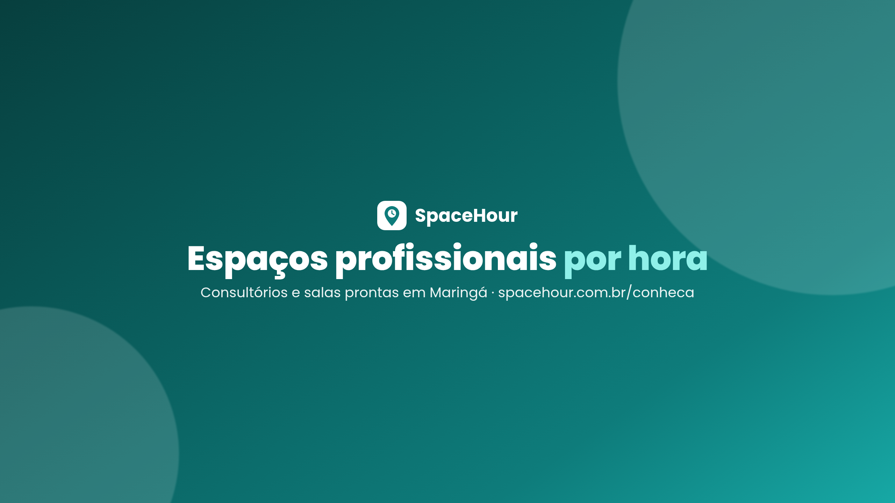
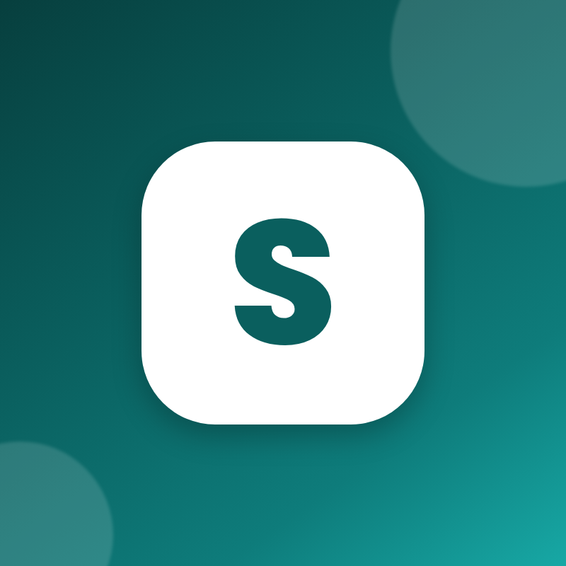
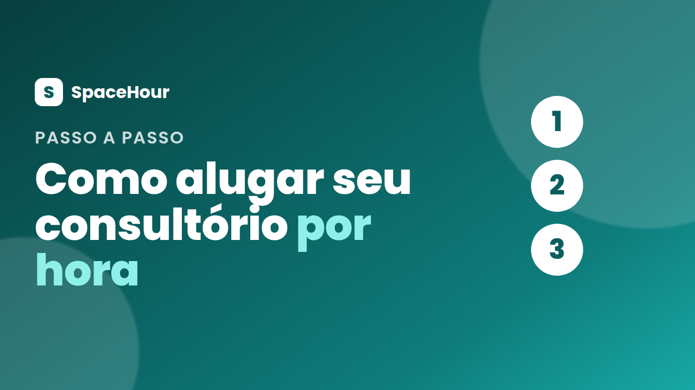
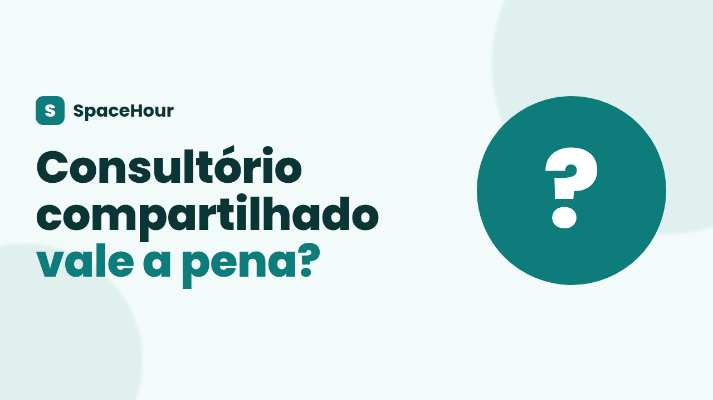
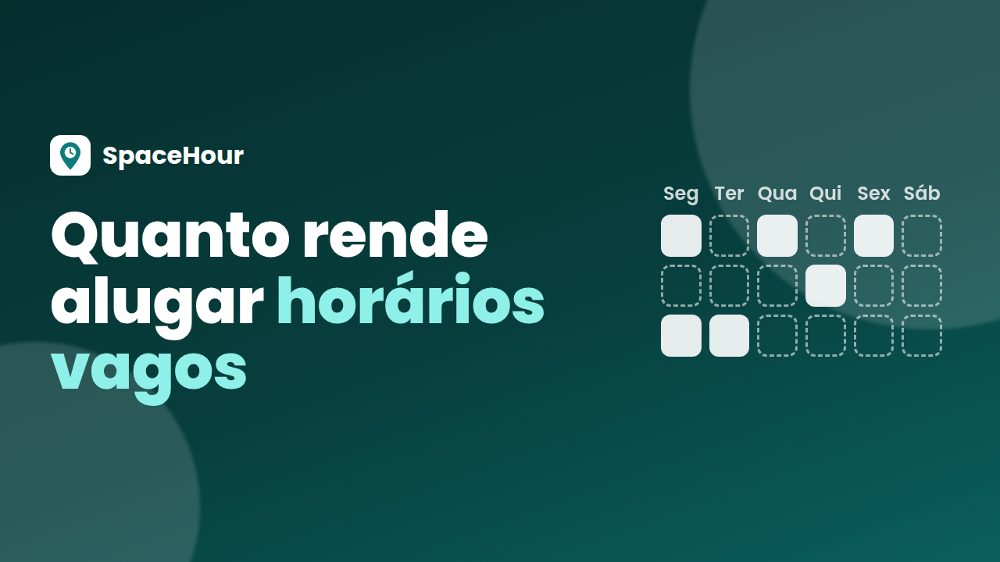
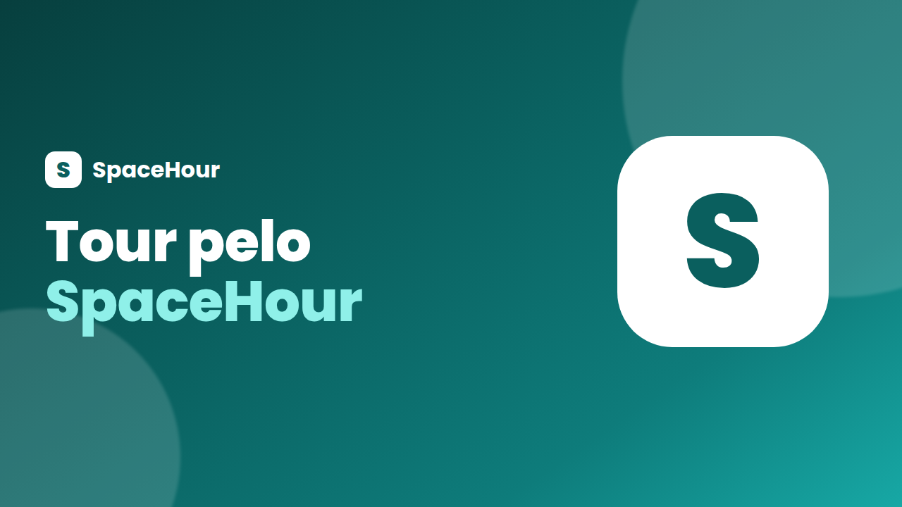
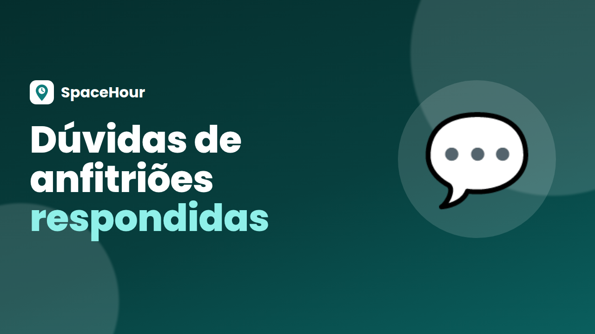
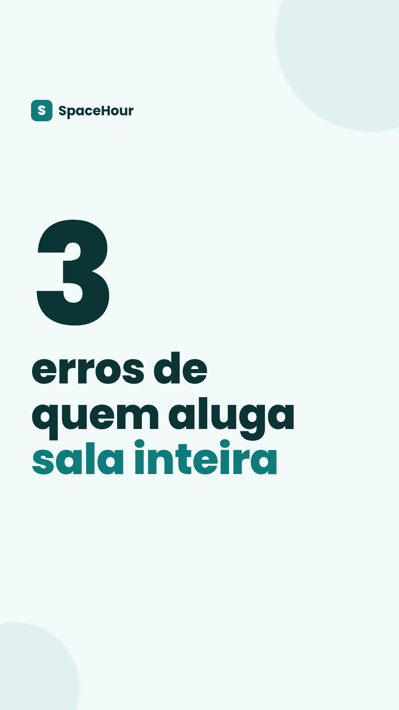

Kit de implementação · YouTube
O que é o SpaceHour: um site (space-hour.com) para alugar por hora espaços profissionais prontos: consultórios odontológicos e médicos, salas de psicologia, fisioterapia e estética, salas de aula, auditórios e salas de reunião.
Quem tem espaço ocioso (o anfitrião) anuncia grátis, sem mensalidade, e paga 5% por reserva paga, mais a tarifa do Mercado Pago.
Quem precisa de sala (o profissional) se cadastra grátis e paga só as horas que usar. Estamos começando por Maringá-PR.
Objetivo do YouTube: ser encontrado por quem pesquisa "aluguel de consultório por hora", "consultório compartilhado" e temas parecidos, explicar o SpaceHour com calma em vídeos longos, alcançar gente nova com Shorts e levar essas pessoas ao cadastro no site. Prioridade inicial: anfitriões.
A quem pedir ajuda: Robson Ravel de Oliveira, responsável pelo SpaceHour. E-mail: support@space-hour.com.
Importante: não existe promoção, desconto, cupom nem taxa zero para anfitriões. Nunca prometa nada disso em vídeo, título, descrição, comentário ou anúncio.
Marque cada item quando estiver pronto. As marcações ficam salvas neste navegador.
O canal é um ativo da empresa. Ele deve ser uma Conta de marca (Brand Account) criada dentro da conta Google da empresa, nunca num Gmail pessoal. Os nomes dos menus do YouTube mudam com frequência; quando um caminho não bater exatamente, procure pela palavra indicada entre aspas.
accounts.google.com → Criar conta → "Para trabalho ou meu negócio" usando o e-mail support@space-hour.com (opção "Usar meu endereço de e-mail atual"), ou use outra conta da empresa que o Robson indicar.myaccount.google.com → Segurança → Verificação em duas etapas. Cadastre o celular da empresa e, se possível, uma chave de acesso (passkey). A verificação em 2 etapas também é exigida para monetização e para transmissões ao vivo.youtube.com com a conta Google da empresa.SpaceHour, aceite e crie. Esse caminho cria o canal como Conta de marca, separado do nome pessoal.studio.youtube.com) → Configurações (engrenagem, canto inferior esquerdo) → Permissões.myaccount.google.com/brandaccounts → selecione SpaceHour → Gerenciar permissões.Sem a verificação por telefone, não é possível enviar as miniaturas deste kit.
No YouTube Studio → Personalização (em algumas contas aparece como "Perfil" ou "Personalizar canal"). As abas costumam ser Layout, Marca (imagens) e Informações básicas.
SpaceHour
Informações básicas → Identificador. Tente nesta ordem (3 a 30 caracteres; letras, números, ponto, hífen e sublinhado):
spacehour spacehourbr spacehour.br spacehour-oficial spacehourmaringa
Avise o Robson de qual @ ficou. O endereço do canal será youtube.com/@ + o identificador.
O SpaceHour é a plataforma para alugar por hora espaços profissionais prontos: consultórios odontológicos e médicos, salas de psicologia, fisioterapia e estética, salas de aula, auditórios e salas de reunião. Começamos por Maringá-PR. Tem consultório ou sala que fica vazia em alguns horários? Anuncie grátis, sem mensalidade. Você define preço, horários e regras e recebe direto na sua conta Mercado Pago. Só há cobrança quando alguém aluga: 5% por reserva paga + tarifa do Mercado Pago. É profissional e precisa de sala? Cadastro grátis, sem contrato, sem fiador e sem condomínio. Pague só as horas que usar, com Pix, cartão ou boleto. No canal: aluguel de consultório por hora, consultório compartilhado, dicas para quem está começando e respostas às dúvidas de quem anuncia. Conheça: https://space-hour.com/conheca?utm_source=youtube&utm_medium=bio&utm_campaign=lanc-geral Contato: support@space-hour.com
Informações básicas → Links → Adicionar link. O primeiro aparece em destaque embaixo do nome do canal.
https://space-hour.com/conheca?utm_source=youtube&utm_medium=bio&utm_campaign=lanc-geral
https://space-hour.com/anuncie?utm_source=youtube&utm_medium=bio&utm_campaign=lanc-anfitrioes
https://space-hour.com/profissionais?utm_source=youtube&utm_medium=bio&utm_campaign=lanc-profissionais
support@space-hour.com. Ele aparece como "Ver endereço de e-mail" na página "Sobre" do canal.SpaceHour, aluguel de consultório por hora, consultório compartilhado, alugar consultório, sala por hora, consultório por hora Maringá, sublocação de consultório, sala para psicólogo, consultório odontológico, coworking saúde, anunciar consultório
Personalização → Marca. Para salvar as imagens: toque e segure → Salvar imagem (celular) ou botão direito → Salvar imagem como (computador). Também estão no GitHub, em espacos/docs/marketing/cards/youtube/.

cards/youtube/banner.png · 2560×1440 · área segura central 1546×423
Imagem do banner → Enviar → confira as três visualizações (TV, computador, celular). O texto já está dentro da área segura; não reposicione.

cards/youtube/perfil.png · 800×800
Imagem (foto do perfil) → Enviar. O YouTube recorta em círculo.
cards/youtube/marca-dagua.png · 150×150
Marca-d'água do vídeo → Enviar → tempo de exibição: "Vídeo inteiro". No computador, ela vira um botão de inscrição no canto do vídeo.
Cada miniatura abaixo vem com título, descrição, tags e capítulos prontos para o upload do vídeo longo correspondente (roteiros na seção 7). Os tempos dos capítulos são estimativas: ajuste depois de editar o vídeo. Regras dos capítulos: o primeiro sempre em 0:00, pelo menos 3 capítulos, cada um com no mínimo 10 segundos.
No upload: Studio → Criar → Enviar vídeos → Detalhes: cole título e descrição, envie a miniatura, escolha a playlist, "Não é conteúdo para crianças". Em Mostrar mais: tags, idioma Português, categoria "Educação" ou "Pessoas e blogs", e marque "Promoção paga" só se houver patrocínio (seção 11.3). Na etapa Elementos do vídeo, adicione uma tela final com "Inscrever-se" e o próximo vídeo.

cards/youtube/thumb-01.png · 1280×720 · Vídeo L1 · playlist Anfitriões
Aluguel de consultório por hora: como anunciar o seu (passo a passo) | SpaceHour
Seu consultório fica vazio em alguns horários? Neste passo a passo você vê como anunciar esses horários no SpaceHour e alugar por hora para profissionais com registro verificado. Anuncie grátis, sem mensalidade: https://space-hour.com/anuncie?utm_source=youtube&utm_medium=video&utm_campaign=lanc-anfitrioes Você define preço, horários e regras, aprova cada pedido ou deixa a reserva instantânea, pode exigir caução e avalista, e recebe direto na sua conta Mercado Pago. Só há cobrança quando alguém aluga: 5% por reserva paga + tarifa do Mercado Pago. Capítulos 0:00 O problema do horário vazio 0:45 Criando a conta no SpaceHour 1:50 Conectando o Mercado Pago e a chave Pix 3:00 Fotos, equipamentos e descrição do espaço 4:20 Preço, horários e regras 5:30 Reserva instantânea ou aprovação de pedidos 6:20 Caução e avalista 7:10 Publicando o anúncio #aluguelporhora #consultorio #spacehour
aluguel de consultório por hora, alugar consultório por hora, anunciar consultório, alugar meu consultório, sublocar consultório, renda extra consultório, consultório Maringá, SpaceHour

cards/youtube/thumb-02.png · 1280×720 · Vídeo L2 · playlists Anfitriões e Profissionais
Consultório compartilhado vale a pena? Prós e contras para quem tem e para quem aluga
Consultório compartilhado (ou aluguel de consultório por hora) vale a pena? Neste vídeo comparamos os dois lados: o dono da sala, que tem horários vagos, e o profissional, que atende poucas vezes por semana. Tenho sala: https://space-hour.com/anuncie?utm_source=youtube&utm_medium=video&utm_campaign=lanc-anfitrioes Preciso de sala: https://space-hour.com/profissionais?utm_source=youtube&utm_medium=video&utm_campaign=lanc-profissionais Capítulos 0:00 O que é consultório compartilhado 0:50 Para quem tem a sala: vantagens 2:10 Para quem tem a sala: cuidados 3:20 Para quem aluga: vantagens 4:30 Para quem aluga: cuidados 5:40 Como o SpaceHour organiza isso 6:40 Resumo #consultoriocompartilhado #consultorio #spacehour
consultório compartilhado, consultório compartilhado vale a pena, aluguel de consultório por hora, sublocação de consultório, coworking saúde, sala por hora, dividir consultório, SpaceHour

cards/youtube/thumb-03.png · 1280×720 · Vídeo L3 · playlist Anfitriões
Quanto rende alugar os horários vagos do consultório? (simulação)
Fizemos uma simulação de quanto um horário vago pode render quando é alugado por hora. Os números são ilustrativos e não são promessa de ganho: o resultado depende do preço, da procura e da sua agenda. Simulação usada no vídeo: R$ 60 por hora × 12 horas por semana × 4 semanas = R$ 2.880 por mês, valor bruto. Desse valor saem 5% do SpaceHour por reserva paga e a tarifa do Mercado Pago. Anuncie grátis, sem mensalidade: https://space-hour.com/anuncie?utm_source=youtube&utm_medium=video&utm_campaign=lanc-anfitrioes Capítulos 0:00 Quanto custa uma hora vazia 1:00 Como calcular o custo da sua hora 2:20 A simulação: R$ 60/h × 12 h × 4 semanas 3:40 As taxas: 5% + tarifa do Mercado Pago 4:40 Como definir um preço justo 5:50 Próximos passos #rendaextra #consultorio #spacehour
quanto rende alugar consultório, alugar horário do consultório, renda extra consultório, aluguel de consultório por hora, custo do consultório, consultório vazio, SpaceHour
cards/youtube/thumb-04.png · 1280×720 · Vídeo L4 · playlist Profissionais
Recém-formado: como atender sem alugar sala (consultório por hora)
Acabou de se formar em odontologia, psicologia, fisioterapia ou outra área da saúde e ainda não tem agenda para pagar uma sala inteira? Veja como começar reservando consultório por hora, sem contrato, sem fiador e sem condomínio. Cadastro grátis: https://space-hour.com/profissionais?utm_source=youtube&utm_medium=video&utm_campaign=lanc-profissionais Capítulos 0:00 O dilema do recém-formado 1:00 Os custos fixos de uma sala inteira 2:10 Alternativa: consultório por hora 3:20 Cadastro e verificação do registro profissional 4:30 Reserva avulsa ou toda semana no mesmo horário 5:30 Pagamento: Pix, cartão ou boleto 6:20 Resumo #recemformado #consultorioporhora #spacehour
recém-formado consultório, primeiro consultório, consultório por hora, sala por hora para psicólogo, alugar sala odontológica, aluguel de consultório por hora, começar a atender, SpaceHour

cards/youtube/thumb-05.png · 1280×720 · Vídeo L5 · playlists Anfitriões e Profissionais
Tour pelo SpaceHour: como reservar consultório e sala por hora em Maringá
Um tour completo pelo SpaceHour: como encontrar um espaço, ver fotos, equipamentos e avaliações, reservar e pagar. E, do outro lado, como o anfitrião recebe e aprova os pedidos. Conheça: https://space-hour.com/conheca?utm_source=youtube&utm_medium=video&utm_campaign=lanc-geral Capítulos 0:00 O que é o SpaceHour 0:40 Tipos de espaço 1:30 Buscando um espaço 2:40 Página do anúncio: fotos, equipamentos e avaliações 3:50 Reservando e pagando (Pix, cartão ou boleto) 5:00 Endereço liberado após a confirmação 5:40 O lado do anfitrião 6:50 Como começar #spacehour #consultorioporhora #maringa
SpaceHour, como funciona SpaceHour, reservar consultório por hora, aluguel de consultório por hora, sala por hora Maringá, consultório compartilhado, sala de reunião por hora, auditório para alugar

cards/youtube/thumb-06.png · 1280×720 · Vídeo L6 · playlists Anfitriões e Dúvidas
Alugar meu consultório por hora é seguro? Dúvidas de anfitriões respondidas
As perguntas mais comuns de quem quer alugar o consultório por hora: quem pode reservar, como funciona o pagamento, quais são as taxas, o que fazer se algo der errado. Anuncie grátis: https://space-hour.com/anuncie?utm_source=youtube&utm_medium=video&utm_campaign=lanc-anfitrioes Ficou alguma dúvida? Deixe nos comentários. Capítulos 0:00 As dúvidas mais comuns 0:40 Quem pode reservar meu espaço? 1:40 Como e quando eu recebo? 2:50 Quais são as taxas? 3:50 Caução, avalista e aprovação de pedidos 5:00 Avaliações dos dois lados 5:50 Preciso de mensalidade ou contrato? 6:30 Como começar #consultorio #anfitriao #spacehour
alugar meu consultório, alugar consultório é seguro, sublocar consultório, aluguel de consultório por hora, caução aluguel por hora, taxas SpaceHour, consultório compartilhado, SpaceHour
O YouTube não deixa enviar uma imagem própria como capa de Short pelo computador. Por isso: coloque a capa como o primeiro segundo do vídeo (no editor do celular ou no CapCut) e, no app do YouTube, na tela de envio, toque no lápis da capa e escolha esse quadro. Links escritos na descrição dos Shorts não são clicáveis: use o recurso "Vídeo relacionado" (no upload ou no Studio → Detalhes do Short) apontando para o vídeo longo do tema.
cards/youtube/shorts-capa-01.png · 1080×1920 · Short S1 · vídeo relacionado: L3
Quanto custa um consultório vazio? #shorts Some aluguel, condomínio e luz e divida pelas horas em que a sala fica aberta: esse é o custo de cada hora vazia. No SpaceHour você aluga esses horários por hora. Anunciar é grátis, sem mensalidade. Link no canal. #consultorio #dentista #maringa #spacehour
cards/youtube/shorts-capa-02.png · 1080×1920 · Short S2 · vídeo relacionado: L5
Aluguei um consultório por 1 hora #shorts Consultório pronto, só pela hora que precisei. Sem contrato, sem fiador, sem condomínio. Pix ou cartão. Cadastro grátis no link do canal. #consultorioporhora #psicologia #fisioterapia #spacehour

cards/youtube/shorts-capa-03.png · 1080×1920 · Short S3 · vídeo relacionado: L2
3 erros de quem aluga sala inteira #shorts Pagar o mês todo para atender poucos dias, contrato longo com fiador e condomínio de sala parada. A alternativa: consultório por hora. Link no canal. #consultoriocompartilhado #autonomo #spacehour
cards/youtube/shorts-capa-04.png · 1080×1920 · Short S4 · vídeo relacionado: L4
Recém-formado: comece sem gastar com sala #shorts Reserve consultório por hora, avulso ou toda semana no mesmo horário. Cadastro grátis, com registro profissional verificado. Link no canal. #recemformado #odontologia #psicologia #spacehour
Ritmo (sugestão inicial): 1 a 2 vídeos longos por semana, 3 Shorts por semana e 2 postagens na aba Comunidade (Postagens) por semana. Publique vídeos longos às terças ou quintas, entre 18h e 20h. Depois de 3 semanas, use Studio → Análises → Público → "Quando seus espectadores estão no YouTube".
| Dia | Formato | Vídeo / imagem | Legenda resumida |
|---|---|---|---|
| 1 | Vídeo longo | L5 · thumb-05 | Tour pelo SpaceHour. Vídeo de destaque do canal. |
| 2 | Short | S5 | Como funciona em 30 s. |
| 3 | Postagem (enquete) | — | "Você dividiria seu consultório por hora?" |
| 4 | Short | S1 · shorts-capa-01 | Quanto custa um consultório vazio? |
| 5 | Vídeo longo | L1 · thumb-01 | Como anunciar seu consultório por hora. |
| 6 | Short | S6 | Seu horário vago vira renda. |
| 7 | Sem post | — | Responder comentários. Gravar lote da semana 2. |
| 8 | Postagem (imagem) | thumb-01 | "Passo a passo para anunciar: assista." |
| 9 | Short | S7 | E se estragarem algo na minha sala? |
| 10 | Vídeo longo | L6 · thumb-06 | Dúvidas de anfitriões respondidas. Ligar anúncios (seção 8). |
| 11 | Short | S2 · shorts-capa-02 | Aluguei um consultório por 1 hora. |
| 12 | Postagem (pergunta) | — | "Qual sua maior dúvida sobre alugar sua sala?" |
| 13 | Short | S8 | Um dia com o SpaceHour. |
| 14 | Sem post | — | Relatório semanal. Gravar lote. |
| 15 | Vídeo longo | L3 · thumb-03 | Quanto rende alugar horários vagos (simulação). |
| 16 | Short | S3 · shorts-capa-03 | 3 erros de quem aluga sala inteira. |
| 17 | Postagem (enquete) | — | "Que tipo de espaço falta em Maringá?" |
| 18 | Short | S9 | Tipos de espaço em 20 s. |
| 19 | Sem post | — | Responder comentários. |
| 20 | Short | S4 · shorts-capa-04 | Recém-formado: comece sem gastar com sala. |
| 21 | Postagem (imagem) | thumb-03 | "Fizemos a conta (simulação)." |
| 22 | Vídeo longo | L2 · thumb-02 | Consultório compartilhado vale a pena? |
| 23 | Short | S1 (versão 2) | Mesmo tema, outro espaço e outro gancho. |
| 24 | Postagem (pergunta) | — | "Você atende quantos dias por semana?" |
| 25 | Short | S7 (versão 2) | Segurança: registro verificado e endereço após reserva. |
| 26 | Sem post | — | Relatório semanal. Gravar lote. |
| 27 | Short | S2 (versão 2) | Reservei por hora, outro tipo de sala. |
| 28 | Postagem (imagem) | thumb-04 | "Recém-formado? Novo vídeo na quinta." |
| 29 | Vídeo longo | L4 · thumb-04 | Recém-formado: atenda sem alugar sala. |
| 30 | Short | S6 (versão 2) | Horário vago vira renda, outro espaço. |
Hoje ela aparece como "Postagens" no canal. Para criar: Studio ou youtube.com → Criar → "Criar postagem". Tipos: texto, imagem, enquete e teste. Se a opção não aparecer, o canal ainda não tem acesso (depende da qualificação de recursos e pode depender de um mínimo de inscritos); pule essas datas e foque nos Shorts. Nas postagens, link escrito é clicável:
https://space-hour.com/conheca?utm_source=youtube&utm_medium=post&utm_campaign=lanc-geral
Você dividiria seu consultório por hora, nos horários em que ele fica vazio? ( ) Sim ( ) Não ( ) Depende de quem for usar ( ) Já faço isso
Regras para todos os vídeos:
S1 a S4 usam as capas shorts-capa-01..04. S5 a S9 usam como capa um quadro do vídeo com o texto do gancho.
Studio → Conteúdo → aba Playlists → Nova playlist (ou "Criar" → "Nova playlist"). Visibilidade: Pública.
| Playlist | Vídeos | Descrição |
|---|---|---|
| Tem consultório? Alugue por hora | L1, L3, L6, L2, L5 | Como anunciar seu consultório ou sala por hora no SpaceHour. |
| Profissional: consultório por hora | L4, L5, L2 | Como reservar consultório e sala por hora, sem contrato. |
| Dúvidas frequentes | L6 e futuros vídeos-resposta | Respostas às perguntas mais comuns sobre o SpaceHour. |
| Shorts SpaceHour | S1 a S9 | Aluguel de consultório por hora em menos de 1 minuto. |
Na página do canal (Personalização → Layout), coloque L5 como vídeo em destaque para quem não é inscrito e as playlists "Tem consultório?" e "Profissional" como seções.
Os anúncios do YouTube são feitos no Google Ads. Use a mesma conta Google Ads que o SpaceHour já usa (ou vai usar) nas campanhas de pesquisa do Google: assim a conversão de cadastro, que já está no site, vale para o YouTube também. Peça ao Robson acesso a essa conta (Google Ads → Administrador → Acesso e segurança). Não crie uma conta nova sem falar com ele.
123-456-7890, canto superior direito).O Google muda os tipos de campanha com frequência. Hoje, para gerar cadastros com vídeo, o tipo indicado é Demand Gen (Geração de demanda), que substituiu as antigas campanhas de "ação em vídeo". Se a tela mostrar outro nome, escolha a opção de vídeo com meta de conversão.
| Item | Campanha 1: Anfitriões (cadastros) | Campanha 2: Alcance (opcional) |
|---|---|---|
| Nome | YouTube | Anfitrioes | Maringa | YouTube | Alcance | Maringa |
| Objetivo | Leads → tipo Demand Gen | Reconhecimento e consideração → Vídeo → visualizações de vídeo |
| Meta de conversão | Inscrição (a mesma conversão do site) | — |
| Canais | Somente YouTube (desmarque Discover e Gmail se houver controle de canais) | YouTube (incluindo Shorts) |
| Lances | Maximizar conversões | Padrão sugerido pelo Google (CPV) |
| Local | Maringá, raio de 30 km (Local → Pesquisa avançada → Raio). Idioma: português. | |
| Público | Idade 25–65+. Sinais de público: interesses em negócios e saúde; palavras pesquisadas: "alugar meu consultório", "sublocar consultório", "renda extra consultório" | Idade 18–65+. Interesses em saúde, educação e empreendedorismo |
| Orçamento diário (sugestão inicial) | R$ 30/dia | R$ 15/dia |
| Criativos | Shorts S1, S6, S7 e o vídeo L1 (os vídeos precisam estar no canal, públicos ou não listados) | S5 e L5 |
| URL final | link "YouTube Ads · anfitriões" abaixo | link "YouTube Ads · geral" abaixo |
Quando houver de 5 a 10 espaços publicados em Maringá, duplique a Campanha 1 como YouTube | Profissionais | Maringa, com S2, S3, S4 e L4, link de profissionais e R$ 15–20/dia (sugestão inicial). O Google pode recomendar orçamento maior para Demand Gen; comece com o sugerido e reavalie em 7 dias pelo custo por cadastro.
Categoria especial: as restrições de "Habitação" do Google Ads valem hoje para os EUA e o Canadá. Se o Google Ads indicar alguma restrição para o Brasil, siga o aviso da tela.
https://space-hour.com/anuncie?utm_source=youtube&utm_medium=paid&utm_campaign=lanc-anfitrioes
https://space-hour.com/profissionais?utm_source=youtube&utm_medium=paid&utm_campaign=lanc-profissionais
https://space-hour.com/conheca?utm_source=youtube&utm_medium=paid&utm_campaign=lanc-geral
Anuncie seu consultório grátis Seu horário vago pode virar renda Alugue sua sala por hora em Maringá Sem mensalidade para anunciar Profissionais com registro verificado
Alugue por hora os horários vagos do seu consultório para profissionais verificados. Você define preço, horários e regras. Receba direto na sua conta Mercado Pago. Anunciar é grátis, sem mensalidade: 5% por reserva paga + tarifa do Mercado Pago. Caução, avalista e aprovação de pedidos para proteger o seu espaço.
Consultório pronto por hora Sem contrato, sem fiador Pague só as horas que usar Reserve consultórios e salas por hora em Maringá. Pix, cartão ou boleto. Sem contrato, sem condomínio e sem fiador. Cadastro grátis.
Nome da empresa: SpaceHour. Logo: cards/youtube/perfil.png. Botão: "Cadastre-se" ou "Saiba mais".
O YouTube não tem pixel próprio. A medição dos anúncios do YouTube é feita pela tag do Google, que já está no código do site. Você só precisa conferir se está funcionando.
| Evento do site | No Google | Quando |
|---|---|---|
| PageView | page_view | Cada página aberta |
| Lead | generate_lead | Clique nos botões de cadastro das landings |
| CompleteRegistration | sign_up + conversão "Inscrição" do Google Ads | Cadastro concluído |
As variáveis usadas no site são VITE_GOOGLE_TAG_ID (ID da tag, formato AW-... ou G-...) e VITE_GOOGLE_ADS_SIGNUP_LABEL (rótulo da conversão de cadastro, formato AW-xxx/yyy). Quem coloca isso na Vercel é o Robson.
Pergunte ao Robson se essas duas variáveis já estão na Vercel. Se ainda não estiverem, crie a conversão na conta Google Ads do SpaceHour:
space-hour.com → Verificar.Cadastro SpaceHour → valor: sem valor → contagem: Uma.AW- + números) e o rótulo de conversão que aparece no trecho send_to (formato AW-123456789/AbCdEf...).Robson, a conversão de cadastro do Google Ads está criada (vale para Pesquisa e YouTube). Variáveis na Vercel (projeto spacehour → Settings → Environment Variables, ambiente Production, sem marcar "Sensitive"): VITE_GOOGLE_TAG_ID = [AW-...] VITE_GOOGLE_ADS_SIGNUP_LABEL = [AW-.../...] Depois é preciso fazer Redeploy. Me avise para eu testar.
Se essas variáveis já existem, não crie outra conversão nem outra tag: as campanhas do YouTube usam a mesma conversão "Inscrição". Criar outra duplicaria a contagem.
tagassistant.google.com → Adicionar domínio → https://space-hour.com/anuncie?utm_source=youtube&utm_medium=paid&utm_campaign=teste → Conectar.AW-... e o evento page_view. Clique no botão de cadastro: aparece generate_lead.Quem recusa cookies não aparece no Google Ads, mas aparece em Admin → Campanha pela UTM. Por isso o Google Ads sempre mostra menos cadastros que o site. É normal.
| Uso | Link |
|---|---|
| Links do canal (geral) | https://space-hour.com/conheca?utm_source=youtube&utm_medium=bio&utm_campaign=lanc-geral |
| Descrição de vídeo (anfitrião) | https://space-hour.com/anuncie?utm_source=youtube&utm_medium=video&utm_campaign=lanc-anfitrioes |
| Descrição de vídeo (profissional) | https://space-hour.com/profissionais?utm_source=youtube&utm_medium=video&utm_campaign=lanc-profissionais |
| Postagens (Comunidade) | https://space-hour.com/conheca?utm_source=youtube&utm_medium=post&utm_campaign=lanc-geral |
| Anúncios | ...utm_source=youtube&utm_medium=paid&utm_campaign=lanc-anfitrioes (ou lanc-profissionais, lanc-geral) |
Não invente outros valores de UTM sem combinar com o Robson: o relatório Admin → Campanha agrupa exatamente por esses nomes.
support@space-hour.com ou a se cadastrar pelo link.Que bom! Anunciar é grátis e sem mensalidade. Você define preço, horários e regras e recebe direto na sua conta Mercado Pago. Só há cobrança quando alguém aluga: 5% por reserva paga + tarifa do Mercado Pago. O link para anunciar está na descrição. Se quiser ajuda para cadastrar, escreva para support@space-hour.com.
Oi! Você reserva consultório ou sala pronta por hora, sem contrato, sem fiador e sem condomínio, avulso ou toda semana no mesmo horário. Cadastro grátis, com verificação do registro profissional. O link está na descrição.
Quem anuncia define o preço da hora. Para quem anuncia: grátis, sem mensalidade, 5% por reserva paga + tarifa do Mercado Pago. Para quem aluga: valor da hora + taxa de serviço de 15% e ISS sobre essa taxa. Pix, cartão ou boleto (boleto só para reservas com 3+ dias de antecedência).
Boa pergunta! Quem aluga informa o registro profissional, que é verificado. O anfitrião pode exigir caução e avalista e aprovar cada pedido. O pagamento é antecipado pelo Mercado Pago, os dois lados se avaliam e o endereço completo só é liberado depois da reserva confirmada.
Quer anunciar seu consultório ou sala? É grátis, sem mensalidade: https://space-hour.com/anuncie?utm_source=youtube&utm_medium=video&utm_campaign=lanc-anfitrioes Dúvidas? Comente aqui que a gente responde.
Crie uma planilha (Google Planilhas) chamada CRM SpaceHour - YouTube com estas colunas, nesta ordem:
Data Nome Contato Rede Tipo Cidade Status Próximo passo Data do próximo contato
Prefere um CRM? Use o RD Station CRM (plano grátis) ou o HubSpot CRM (grátis) com as mesmas colunas como campos. Se a conversa for para o WhatsApp Business, crie etiquetas com os mesmos status.
Cruzar com o site: toda sexta, peça ao Robson (ou abra, se tiver acesso) Admin → Contatos, filtre os cadastros da semana e atualize o status de quem cadastrou, publicou espaço ou reservou. A lista respeita quem pediu para não receber marketing: não mande divulgação para essas pessoas.
A receita vem das reservas: o SpaceHour recebe 5% de cada reserva paga ao anfitrião e a taxa de serviço paga pelo profissional. O caminho é: vídeo → link da descrição ou anúncio → cadastro → anúncio publicado (anfitrião) ou reserva (profissional).
Os requisitos mudam e variam por país. Valores aproximados abaixo. Para conferir os atuais: YouTube Studio → "Ganhar dinheiro" (Earn). Lá aparece o progresso do canal e o botão para se inscrever quando ele se qualificar.
| Nível | Requisitos aproximados | O que libera |
|---|---|---|
| Nível de apoio dos fãs (inicial) | 500 inscritos + 3 vídeos públicos nos últimos 90 dias + (3.000 horas de exibição públicas em 12 meses ou 3 milhões de visualizações de Shorts em 90 dias) | Clube dos canais (assinaturas mensais), Super Thanks, Super Chat e Super Stickers em lives, YouTube Shopping |
| Nível completo | 1.000 inscritos + (4.000 horas de exibição públicas em 12 meses ou 10 milhões de visualizações de Shorts em 90 dias) | Tudo acima + receita de anúncios exibidos nos vídeos e parte da receita do YouTube Premium |
Toda segunda-feira, anote numa aba "Métricas" da planilha:
| Métrica | Onde ver |
|---|---|
| Inscritos (total e novos na semana) | Studio → Análises → Visão geral |
| Visualizações, horas de exibição e impressões | Studio → Análises → Visão geral e Alcance |
| Taxa de cliques da miniatura (CTR) | Studio → Análises → Alcance |
| Visitas ao site vindas do YouTube | O Studio não mostra cliques em links: use os cadastros por UTM abaixo |
| Cadastros com origem YouTube | Site → Admin → Campanha (utm_source = youtube, por campanha) |
| Gasto e conversões dos anúncios | Google Ads → Campanhas (filtro: campanhas "YouTube |", últimos 7 dias) |
| Custo por cadastro | Gasto ÷ cadastros youtube com utm_medium=paid em Admin → Campanha |
| Leads no CRM por status | Sua planilha CRM |
YouTube · semana de [dd/mm] a [dd/mm] 1. Inscritos: [total] (+[novos]) · visualizações: [n] · horas de exibição: [n] 2. Cadastros YouTube (Admin → Campanha): [anfitriões] anfitriões, [profissionais] profissionais · espaços publicados: [n] 3. Anúncios: gasto R$ [valor] · custo por cadastro R$ [valor] · melhor vídeo: [nome] 4. CRM: [n] novos contatos · [n] conversando · [n] cadastraram 5. Próxima semana: [o que vou mudar ou testar]
Dúvidas: Robson, support@space-hour.com.